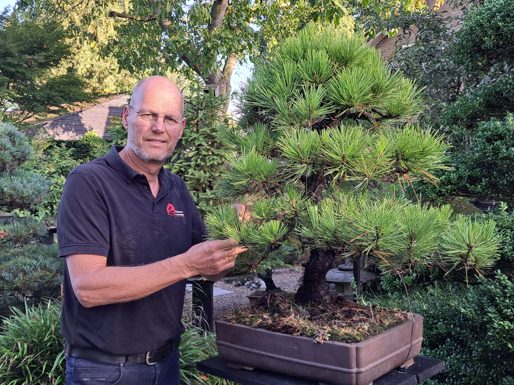

Bij ons komen liefhebbers samen die graag met bomen bezig zijn en van elkaar willen leren.
Onze vereniging is ontstaan als Brabantse afdeling van de Nederlandse Bonsai Vereniging en is al jarenlang een vaste plek voor bonsailiefhebbers in de regio. We willen vooral samen bezig zijn met bonsai, elkaar helpen en plezier houden in de hobby.
Tijdens onze bijeenkomsten werken leden aan hun eigen bomen. Beginners krijgen hulp bij de basis en wie al langer bezig is, kan juist verder praten over vorm, opbouw en presentatie. Vaak kom je samen sneller op ideeën: wat kan nu, wat moet nog even wachten en wat is een logische volgende stap?
Bij ons draait bonsai om geduld en aandacht, maar ook om een club waar je makkelijk binnenstapt. Je hoeft geen collectie topbomen te hebben om mee te doen. Nieuwsgierigheid, een boom en zin om te leren zijn genoeg.
Onze ereleden
Onze vereniging is gevormd door mensen die jarenlang tijd, kennis en energie in de club hebben gestoken. Met deze eregalerij bedanken we hen voor wat ze voor ons hebben betekend.

Pieter van Uden
Pieter van Uden is al vele jaren actief in de bonsaiwereld en heeft veel voor onze vereniging betekend. Hij was jarenlang bestuurslid, waarvan een lange periode als voorzitter, en veel leden kennen hem als iemand met veel kennis en enthousiasme. Met zijn inzet voor de vereniging, de NBV en de bonsaihobby heeft hij veel mensen op weg geholpen.